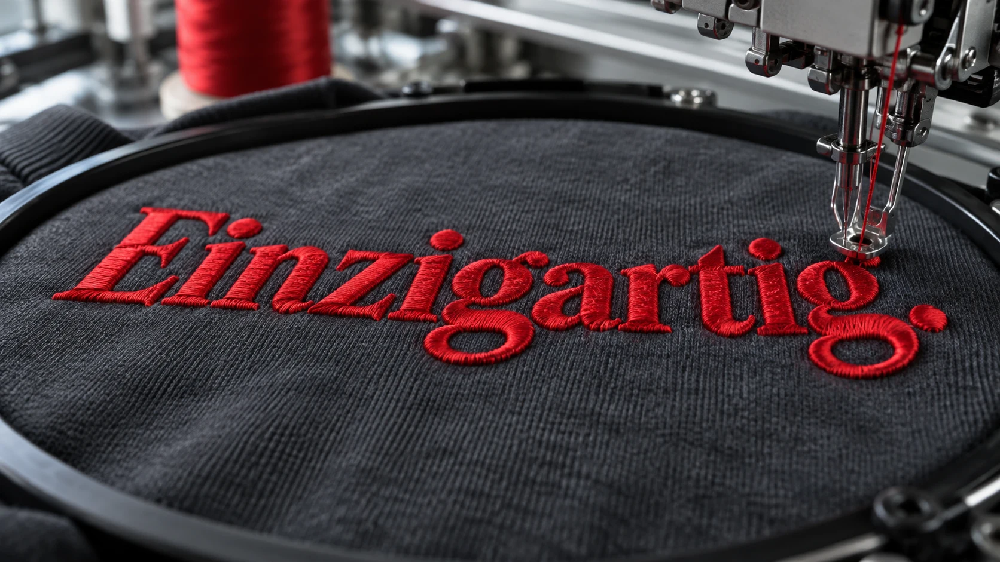
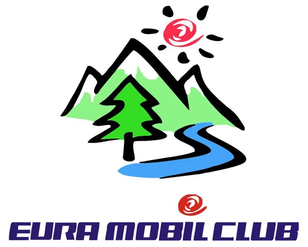
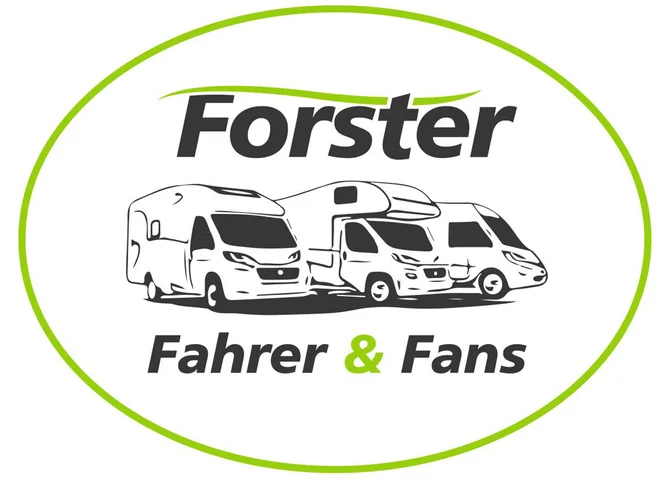
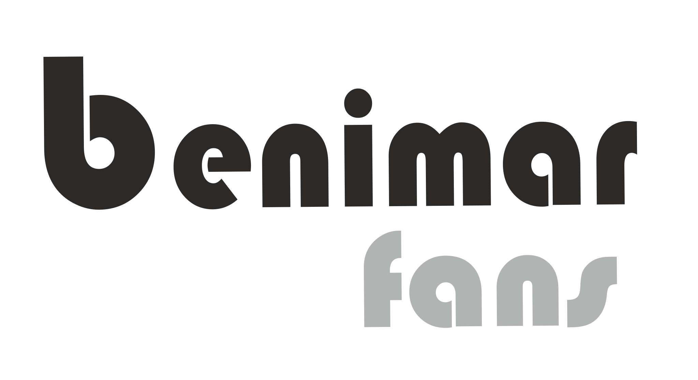
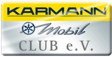
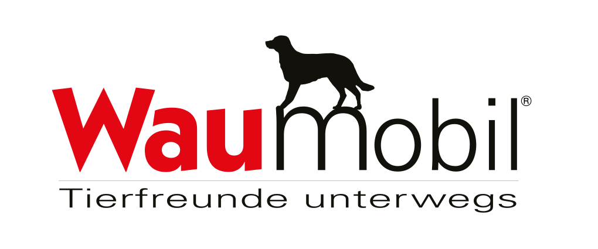
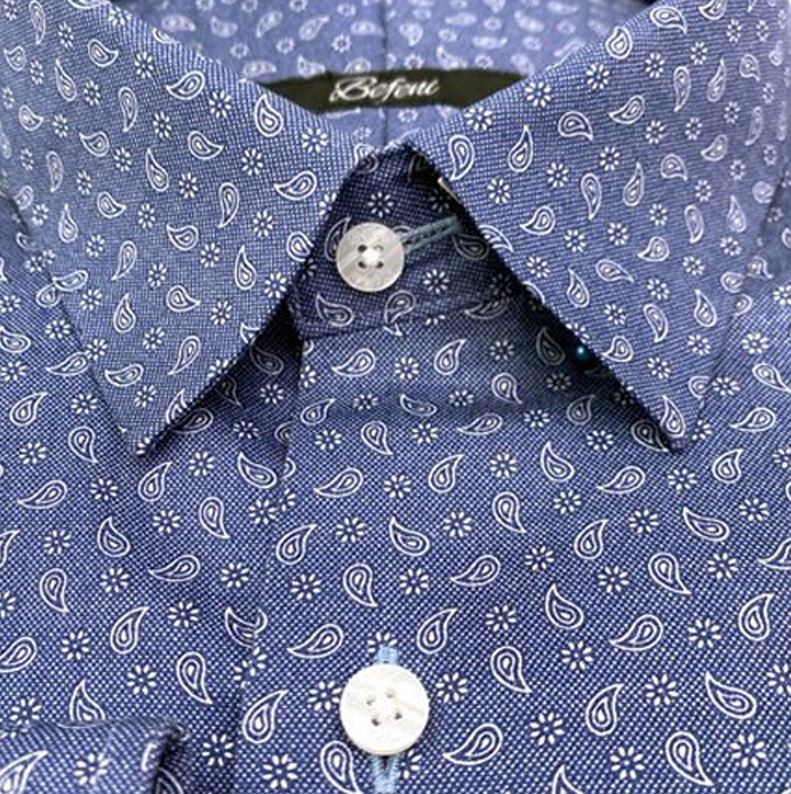
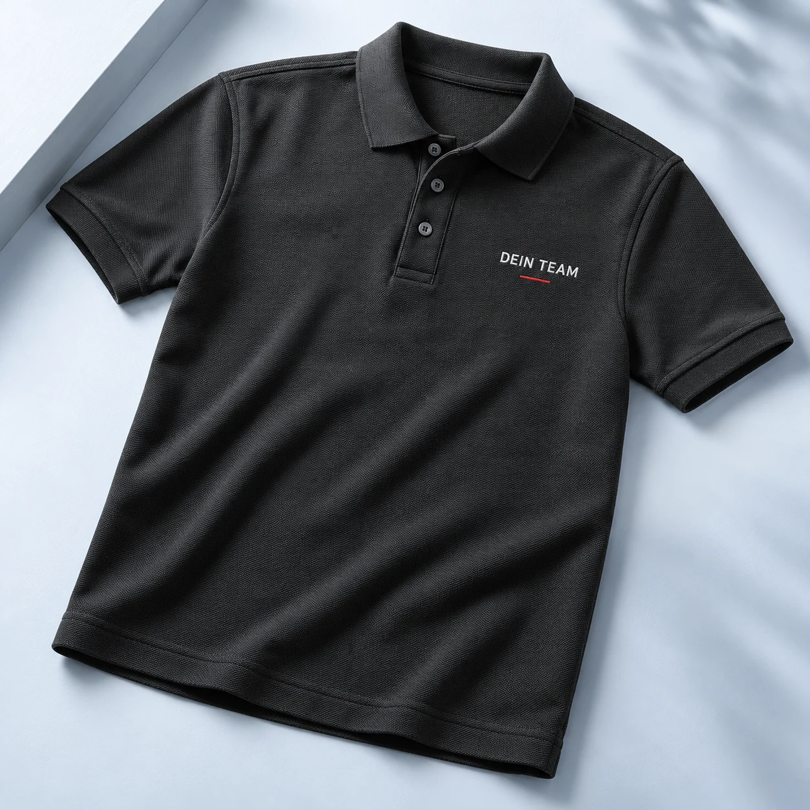
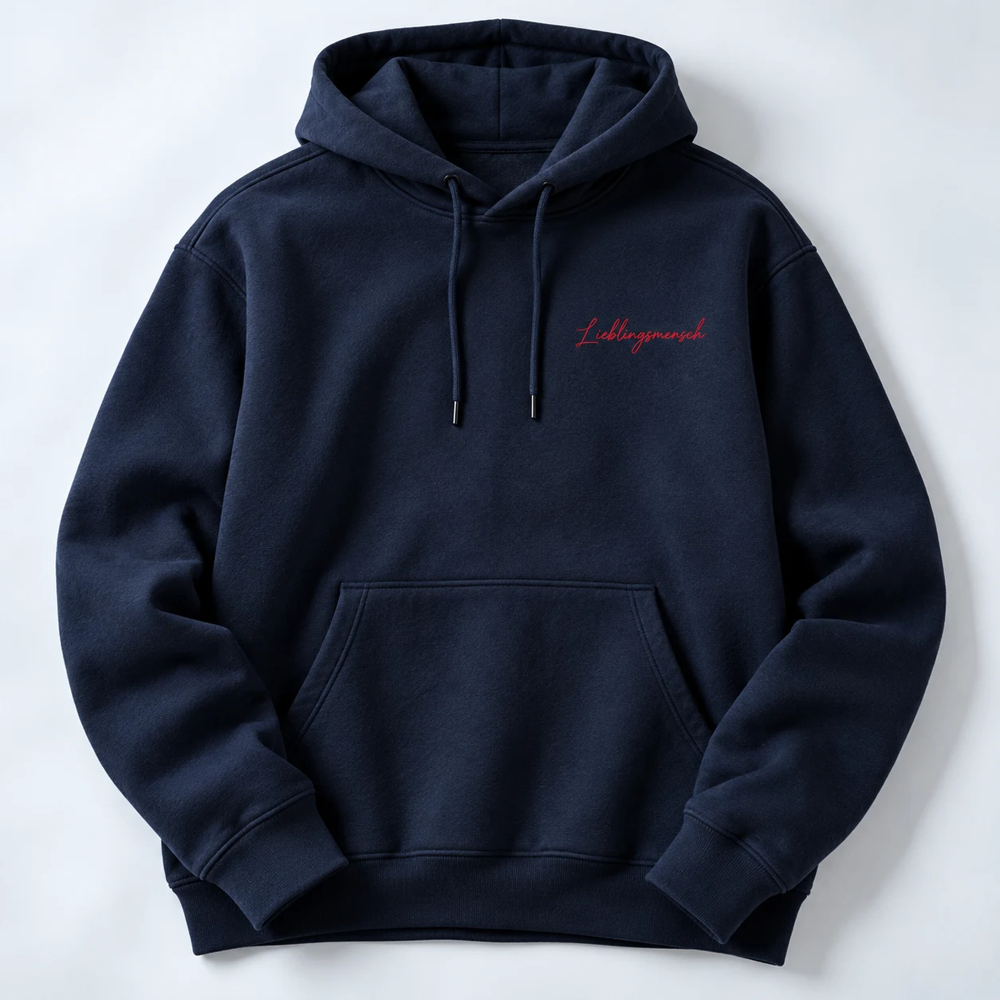
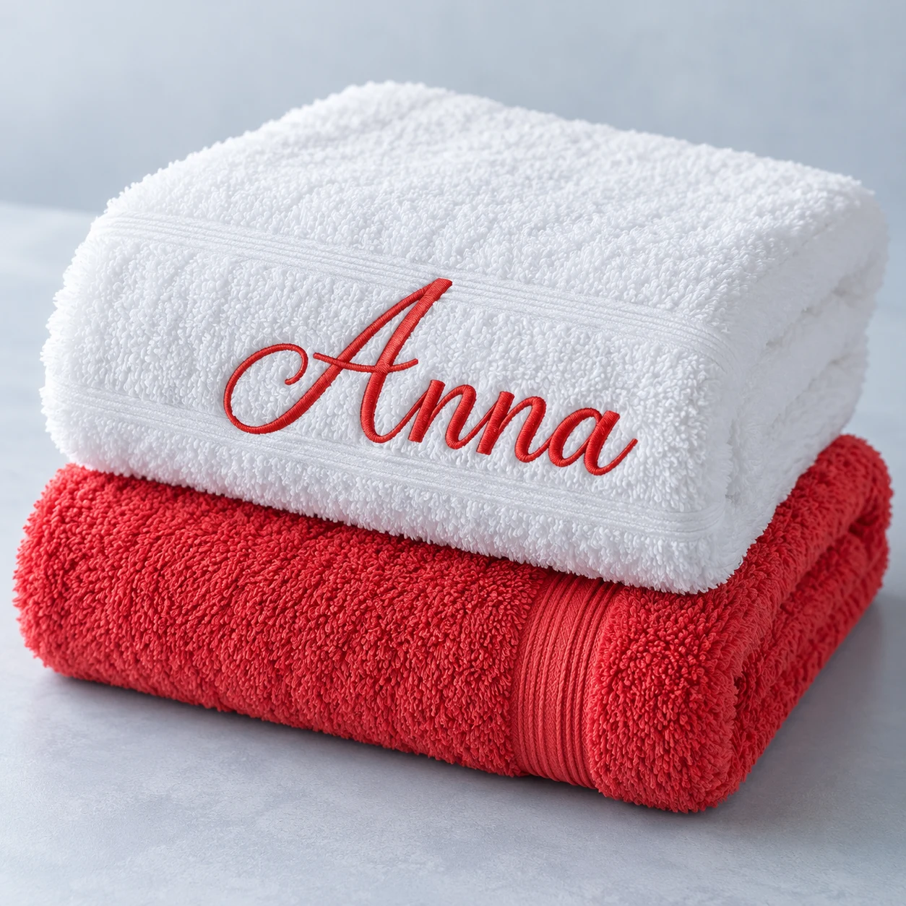

DEINE IDEE. UNSER HANDWERK.Nicht einfach
Nicht einfach
bestickt.
Deins.
Dein Name. Dein Logo. Dein Lieblingsstück.
Wir machen Textilien persönlich – vom Geschenk bis zum gemeinsamen Teamauftritt.
Mit Herz & Faden.
Persönliche Beratung von Sylke Gauder.
Persönliche Beratung von Sylke Gauder.

Persönlichbis inskleinste Detail
Aus einer Idee wird dein Stück.Individuell. Persönlich. Gauder.
STICKEREI MIT CHARAKTER
Ein kleiner Faden. Ein großer Unterschied.
Individuelle BestickungDein Name, dein Motiv, dein Logo
Besondere GeschenkideenFür Lieblingsmenschen gemacht
Für Firmen & VereineEin gemeinsamer Auftritt
Persönlich beratenDirekt mit Sylke Gauder
OFFIZIELLE CLUB-BESTICKUNGDein Club.
Dein Club.
Deine Verbundenheit.
Für Eura Mobil Club, Forster, Benimar, Karmann Club und Waumobil.
Persönlich bestickt von Sylke Gauder.

39 Produkte entdecken
Eura Mobil Club
Zum Sortiment
51 Produkte entdecken
Forster Fahrer & Fans
Zum Sortiment
Kollektion folgt
Benimar Fans
Vorschau ansehen
Kollektion folgt
Karmann Club
Vorschau ansehen
32 Produkte entdecken
Waumobil Edition
Zum SortimentAUCH NACH MASS. AUCH MIT LOGO.Dein Hemd.
Dein Hemd.
Ganz deine Handschrift.
Maßhemden und Maßblusen – individuell gefertigt und auf Wunsch mit deinem Logo, Monogramm oder Schriftzug bestickt.
Maßhemden entdecken
ENTDECKEN. GESTALTEN. FREUEN.
Alle Produkte Lieblingsstücke mit Persönlichkeit.

MIT LOGO ERHÄLTLICH
MIT LOGO ERHÄLTLICH
MIT LOGO ERHÄLTLICHEine Auswahl an Produktideen für den neuen Shop. Artikel, Preise und Abbildungen sind Beispiele.
CAMPER EDITION
Dein Camper. Dein Shirt.
Deine Marke, deine Farbe, dein Platz fürs Logo.
MIT HERZ. MIT FADEN. MIT PERSÖNLICHKEIT.
DEIN WUNSCH HAT BEI UNS EINEN NAMEN.Manche Dinge
Manche Dinge
sind eben
persönlich.
Das Handtuch mit dem ersten Namen. Das Polo mit dem eigenen Firmenlogo. Oder eine kleine Aufmerksamkeit, die sagt: Ich habe an dich gedacht. Wir geben deiner Idee den passenden Faden.
Mehr über unsere StickereiVON DER IDEE ZUM LIEBLINGSSTÜCK
So wird es deins.
Du bringst die Idee mit.
Den Rest besprechen wir persönlich.
01
Dein Lieblingsstück.
Wähle ein Textil aus oder erzähle uns, was du suchst. Gemeinsam finden wir die passende Grundlage.
02
Deine persönliche Note.
Name, Initialen oder Firmenlogo: Wir besprechen Motiv, Garnfarbe, Größe und die richtige Platzierung.
03
Dein ganz eigenes Stück.
Nach der Abstimmung wird aus deiner Idee eine Stickerei. Preis und Fertigstellung klären wir persönlich.
GUT ZU WISSENNoch ein
Noch ein
loser Faden?
Hier findest du Antworten auf häufige Fragen. Und wenn etwas offenbleibt, sind wir persönlich für dich da.
Kann ich ein eigenes Logo besticken lassen?
Ein eigenes Firmen- oder Vereinslogo kannst du mit uns besprechen. Für eine erste Einschätzung helfen eine gut erkennbare Vorlage, die gewünschte Größe und die Stückzahl. Bereite hier deine Anfrage vor.
Ist auch ein einzelnes Stück möglich?
Frage gern dein Einzelstück an – zum Beispiel ein Handtuch mit Namen oder eine persönliche Geschenkidee. Ob sich dein Textil und Motiv eignen und welcher Aufwand entsteht, stimmen wir individuell ab.
Kann ich eigene Textilien mitbringen?
Bitte sprich uns vorher darauf an. Material, Verarbeitung und gewünschte Stickposition bestimmen, ob dein Textil geeignet ist. Wir klären die Möglichkeiten gemeinsam mit dir.
Was kostet eine individuelle Bestickung?
Der tatsächliche Preis hängt unter anderem von Motiv, Stickgröße, Textil und Stückzahl ab. Die Clubartikel zeigen Preisangaben aus unseren bestehenden Shops. Preise für frei gestaltete Produktideen sind Beispiele für diesen Entwurf. Ein verbindliches Angebot erhältst du nach der Abstimmung.
Wie lange dauert die Anfertigung?
Deinen Wunschtermin kannst du direkt in der Anfrage angeben. Den möglichen Fertigstellungstermin besprechen wir zusammen mit Motiv, Textil und Stückzahl.